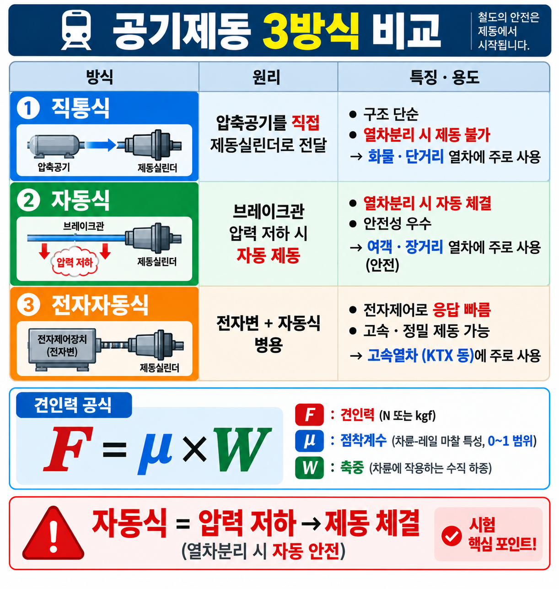

GATE5 · PART 12 · UNIT 12-04
제동방식·공기제동
발전제동 vs 회생제동 · 공기제동 3방식 · 기계적 vs 전기적 제동
★★★ A등급
FINAL PUBLISH v1.0
§0 선행 용어
발전제동 (Dynamic Braking)
전동기를 발전기로 전환하여 제동력 발생. 발생 전기를 저항기로 열로 소산. 에너지 낭비.
회생제동 (Regenerative Braking)
발전제동에서 발생한 전기를 가선(架線)에 반환하는 방식. 에너지 회수·절약. 친환경.
공기제동 (Air Brake)
압축공기로 브레이크 슈를 가압하는 기계적 제동. 비상제동·보완용. 고장 시 자동 체결.
기초제동 (Foundation Brake)
차량의 차륜 또는 디스크에 직접 마찰력을 가하는 기계적 제동장치의 기본 구성 요소.
수용제동 (Absorption Braking)
공기나 유압·마찰력을 이용하여 바퀴를 직접 제동하는 기계적 제동장치의 하나.
와류제동 (Eddy Current Braking)
전자기 유도에 의한 와전류(eddy current)로 제동력 발생. 전기저항제동 3종 중 하나.
§1 제동방식 비교 — 발전·회생·공기·기초제동 (SOURCE: 4.html 개념50)
4.html 개념50
제동방식 세부 비교
★★★
| 제동 방식 | 원리 | 에너지 처리 | 분류 |
|---|---|---|---|
| 발전제동 (저항제동) |
전동기 → 발전기로 전환하여 제동 | 발생 전기를 저항기로 열로 소산. 에너지 낭비. | 전기적 제동 |
| 회생제동 | 발전제동 + 발생 전기를 가선에 반환 | 전기를 가선(架線)에 반환. 에너지 회수·절약 (친환경). | 전기적 제동 |
| 공기제동 | 압축공기로 브레이크 슈 가압 | 마찰열 발생. 비상제동·보완용. 고장 시 자동 체결. | 기계적 제동 |
| 기초제동 | 차륜·디스크에 마찰력 직접 가압 | 마찰에 의한 제동. 기계적 제동장치 기본 구성. | 기계적 제동 |
전기적 제동 vs 기계적 제동 분류
| 구분 | 종류 | 특성 |
|---|---|---|
| 전기적 제동 | 발전제동, 회생제동, 와류제동 | 전동기를 발전기로 이용. 전자기 원리 활용. |
| 기계적 제동 | 공기제동, 수용제동, 마찰제동 | 공기·유압·마찰력으로 바퀴 직접 제동. |
⚠️ 함정: 발전제동 ≠ 회생제동
발전제동: 전기를 열로 소산 (저항기) → 에너지 낭비
회생제동: 전기를 가선에 반환 → 에너지 절약 (친환경)
발전제동: 전기를 열로 소산 (저항기) → 에너지 낭비
회생제동: 전기를 가선에 반환 → 에너지 절약 (친환경)
📌 이론 배경: 전기철도의 제동은 전기적 제동(발전·회생)과 기계적 제동(공기·마찰)을 병용. 회생제동은 발전제동에서 발생한 전기를 낭비하지 않고 가선을 통해 다른 열차에 공급하거나 변전소에 반환.
§2 공기제동 특성 (SOURCE: 4.html 개념50)
4.html 개념50
공기제동 3방식 — 직통·자동·전자직통
★★★
| 항목 | 내용 |
|---|---|
| 작동 원리 | 압축공기로 브레이크 슈(shoe)를 가압하여 차륜과 마찰 발생 |
| 용도 | 비상제동·보완용. 전기제동 고장 시 주 제동으로 활용. |
| 안전성 | 고장(공기 누출 등) 시 자동 체결 — 페일세이프(Fail-safe) 원리 |
| 병용 | 전기적 제동(발전·회생)과 함께 병용하여 제동 신뢰성 확보 |
공기제동 3방식 비교 (VIS-084 참조)
| 방식 | 특성 |
|---|---|
| 직통공기제동 | 제동관의 공기압을 직접 제어. 간단한 구조. 응답 빠름. |
| 자동공기제동 | 제동관 공기압 감소 시 자동 체결. 고장 시 자동 제동(페일세이프). 화물·여객 열차 표준. |
| 전자직통공기제동 | 전자 제어 + 공기제동 병용. 정밀 제어 가능. 고속열차·현대 전동차에 적용. |
📌 자동공기제동의 페일세이프: 공기관이 파손되거나 연결이 끊어지면 공기압이 떨어져 제동이 자동 체결됨 → 안전 확보

VIS-084 · 공기제동 3방식 비교표
§3 전기저항제동 3종 (SOURCE: 4.html 개념50)
4.html 개념50
전기저항제동 3종 — 회생·발전·와류
★★★
| 종류 | 원리 | 에너지 처리 | 특징 |
|---|---|---|---|
| 회생제동 | 전동기 → 발전기 전환 | 발생 전기를 가선에 반환 | 에너지 절약, 친환경 |
| 발전제동 (저항제동) |
전동기 → 발전기 전환 | 발생 전기를 저항기로 열 방출 | 에너지 낭비, 저항기 필요 |
| 와류제동 | 전자기 유도 → 와전류 발생 | 와전류에 의한 제동력 발생 | 마모 없음, 고속에서 효과적 |
📌 전기저항제동 3종 암기: 회생 / 발전(저항) / 와류
회생제동이 발전제동보다 에너지 효율이 높음 — 가선 반환 여부가 핵심 차이
회생제동이 발전제동보다 에너지 효율이 높음 — 가선 반환 여부가 핵심 차이
§4 철도차량 제동방식 비교 도해

VIS-095 · 철도차량 제동방식 비교
§5 시험 포인트 · 함정
핵심 암기 포인트
- 발전제동: 전동기 → 발전기 전환, 발생 전기를 열로 소산 (저항기)
- 회생제동: 발전제동 + 발생 전기를 가선에 반환 — 에너지 절약
- 공기제동: 압축공기로 브레이크 슈 가압. 고장 시 자동 체결 (페일세이프)
- 전기저항제동 3종: 회생제동 · 발전제동(저항제동) · 와류제동
- 기계적 제동장치: 수용제동이 해당 (공기·유압·마찰력으로 바퀴 직접 제동)
- 자연제동은 정식 제동 방식이 아님
| 함정 선택지 | 정오 | 근거 |
|---|---|---|
| "발전제동은 전기를 가선에 반환한다" | ❌ 오답 | 발전제동은 열로 소산. 가선에 반환하는 것은 회생제동. |
| "회생제동과 발전제동은 같은 방식이다" | ❌ 오답 | 발전제동은 열 소산, 회생제동은 가선 반환 — 에너지 처리가 다름. |
| "와류제동은 기계적 제동장치이다" | ❌ 오답 | 와류제동은 전기적 제동(전자기 유도). 기계적 제동은 공기·수용 등. |
| "자연제동은 열차 제동 방식의 하나이다" | ❌ 오답 | 자연제동은 정식 제동 방식이 아님. (발전·회생·수용 등이 정식 방식) |
| "수용제동은 전기적 제동장치이다" | ❌ 오답 | 수용제동은 기계적 제동장치 (공기·유압·마찰력으로 바퀴 직접 제동). |
| "공기제동은 고장 시 제동이 해제된다" | ❌ 오답 | 공기제동은 고장 시 자동 체결 (페일세이프 원리). |
📝 기출문제 (3문항)
※ 전체 문제·정답·해설이 펼쳐진 상태로 표시됩니다.
Q1
rk_ch83_33 · SOURCE: 기계적 제동장치
기계적 제동장치로 맞는 것은?
- ① 와전류제동
- ② 수용제동
- ③ 전자제동
- ④ 회생제동
정답: ② 수용제동
기계적 제동장치: 공기나 유압·마찰력을 이용하여 바퀴를 직접 제동하는 방식. "수용제동"이 이에 해당. 회생·발전·와전류제동 등은 전동기를 발전기로 이용하는 전기제동장치이다.
기계적 제동장치: 공기나 유압·마찰력을 이용하여 바퀴를 직접 제동하는 방식. "수용제동"이 이에 해당. 회생·발전·와전류제동 등은 전동기를 발전기로 이용하는 전기제동장치이다.
Q2
rk_ch83_34 · SOURCE: 열차 제동방식
열차 제동방식이 아닌 것은?
- ① 발전제동
- ② 자연제동
- ③ 수용제동
- ④ 회생제동
정답: ② 자연제동
열차 제동 방식: 공기제동·발전제동·회생제동·수용제동 등. "자연제동"은 정식 제동 방식이 아니다.
열차 제동 방식: 공기제동·발전제동·회생제동·수용제동 등. "자연제동"은 정식 제동 방식이 아니다.
Q3
4.html 개념50 기출예시 · SOURCE: 회생제동
전동기를 발전기로 활용해 제동하되 발생 전기를 가선에 반환하는 제동 방식은?
- ① 발전제동
- ② 와류제동
- ③ 회생제동
- ④ 공기제동
정답: ③ 회생제동
회생제동: 전동기를 발전기로 전환하여 제동력을 발생시키고, 발생된 전기를 가선(架線)에 반환하는 방식. 에너지를 회수·절약하여 친환경적. 발전제동(저항제동)은 발생 전기를 저항기로 열로 소산한다는 점에서 차이가 있음.
회생제동: 전동기를 발전기로 전환하여 제동력을 발생시키고, 발생된 전기를 가선(架線)에 반환하는 방식. 에너지를 회수·절약하여 친환경적. 발전제동(저항제동)은 발생 전기를 저항기로 열로 소산한다는 점에서 차이가 있음.